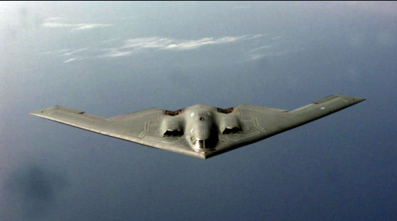

Departure
We left Sausalito at 0400 on October 10, 1973, heading out through the Gate in one of those heavy,
thick and windless summer fogs. There were no photographers, no reporters, and no fuss. We went
out subdued and serious, thinking ahead to the thousands of cruising miles between us and the
Atlantic Ocean. In company were two other yachts; our "running mate" Shearwater and the
Socio, a large ketch piloted by Ted Beacon. Ted had offered to guide us to Main Ship
Channel Buoy #8 by radar, and we had gladly accepted. By 0700 we were feeling our way south to
Santa Cruz, but the trip to Buoy #8 deserves some attention. Despite radar reflections all
around, big shipping was a definite worry much alleviated by using VHF channel 13 for
continual updates from the new traffic center. At one time we were cautioned by a pilot aboard
a large freighter to hold station while he cut between us and Ted under de Golden Bridge. There
are few sensual experiences to compare with the muteed pulse of an invisible freighter passing
close at hand in the foggy blackness. You grab the tiller a little tighter, lean forward look
around as the tiny cones of your running lights reach into nothingness.
Return to original website.